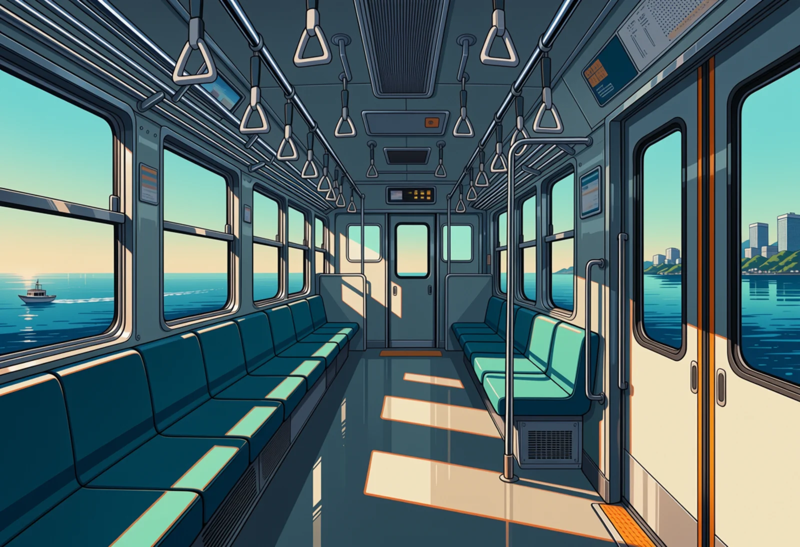
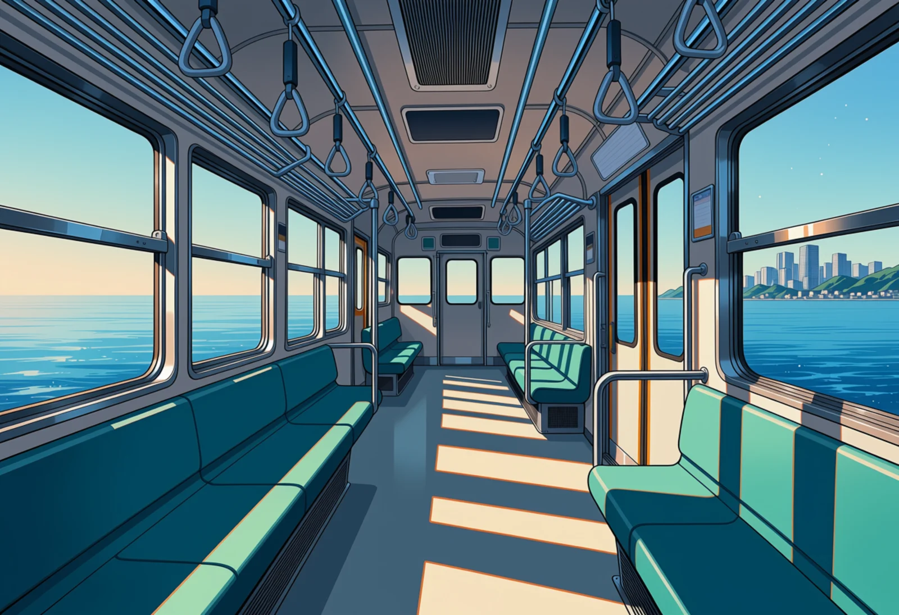
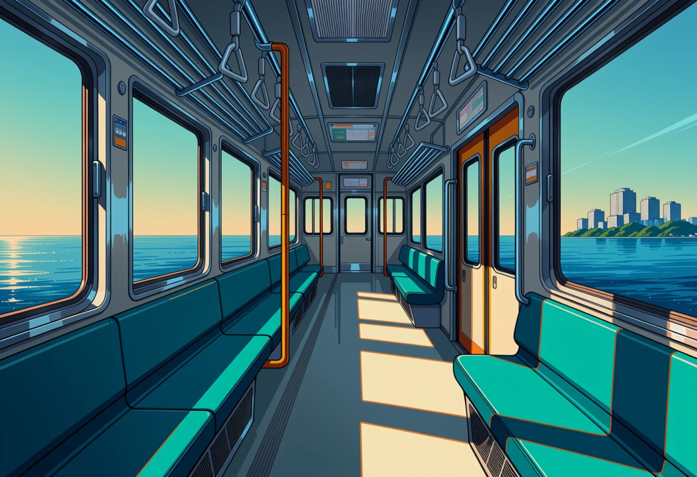
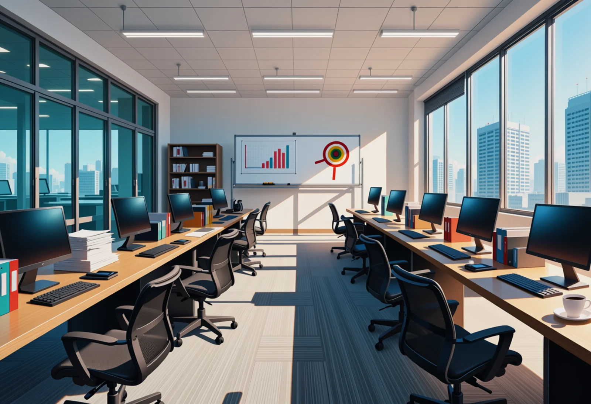
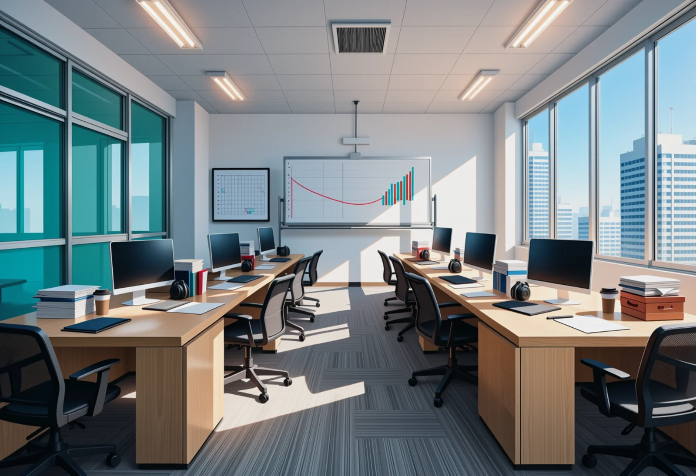
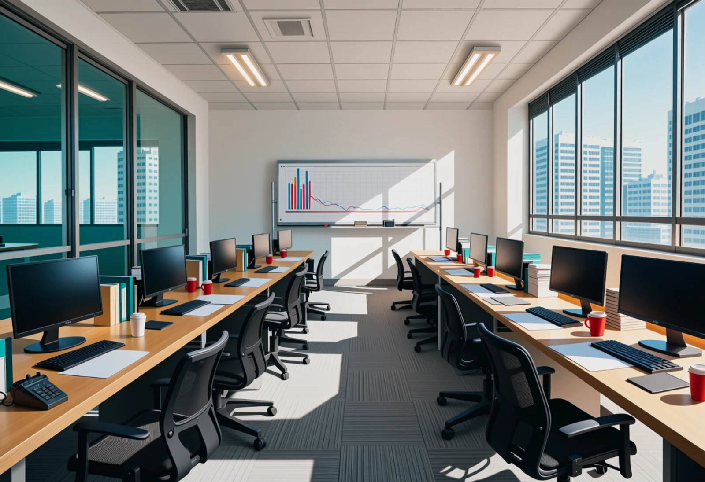

Day-1 locations
Round 2. The gate and copy room are picked. The monorail and Sales are redone after your notes. All drawn with RDBT Anima at the game's shape. The basement office is in the cast round (decide2). Each set starts with the current game image in grey. Nothing is in the game yet. Click an image to enlarge; arrow keys step through, Esc closes.
Monorail (inside the carriage), redo
Redone after your note that round 1 put the carriage at sea level. The car rides on the beam about 15 m up, so the side windows show sky, a low horizon and water far below. No beam or pillars outside the side windows; the island city is small on the horizon on the right (exit) side.

Current game image (for comparison)

monorail-high3-1702
Intent: He arrives to live on the island: an empty carriage high over the bay, the island city ahead on the exit (right) side.
The car is on the beam about 15 m up: the horizon sits low in the windows, and the small boat on the left reads as far below. The island city is on the horizon through the right-hand door. No beam or pillars outside.
Prompt
masterpiece, best quality, score_9, score_8, score_7, year 2025, newest, highres, absurdres, very aesthetic, anime screenshot, anime coloring, 2d, cel shading, clean lineart, safe, no humans, scenery, background art for a visual novel, inside an empty Japanese monorail carriage, camera standing in the aisle at eye level looking down the length of the car, long teal bench seats along both walls under wide windows, hand straps hanging from ceiling rails, grab poles, a pair of sliding doors on the right wall, the train is high above the sea: (through the windows the horizon line sits in the lower third of each window, sky fills most of the window, the calm sea far below:1.3), a tiny boat far below trailing a thin white wake, through the right-hand windows a distant island city of glass office towers, small on the horizon, bright morning light, dominant pale sky blue and sea blue, broad white and light grey interior, sparse teal seat and orange accents
Negative
worst quality, low quality, early, old, score_1, score_2, score_3, artist name, blurry, jpeg artifacts, bad anatomy, bad hands, missing fingers, extra fingers, long fingernails, claws, extra limbs, merged limbs, text, watermark, signature, 3d, realistic, photorealistic, render, chubby, nude, nsfw, child, loli, people, person, 1girl, 1boy, crowd, character, people, silhouette, passenger, readable text, letters, logo, brand name, signage text, duplicate objects, floating objects, impossible architecture, distorted perspective, warped lines, train on water, floating train, rails on water, bridge without pillars, bed, sofa, living room, bridge, pillars, columns, viaduct, elevated track outside, rails, waves at window level, water at the window sill, beach

monorail-high4-1802
Intent: He arrives to live on the island: an empty carriage high over the bay, the island city ahead on the exit (right) side.
Same staging with the camera seated lower. Calm, finely drawn water well below, the island small on the horizon on the right, no track in view.
Prompt
masterpiece, best quality, score_9, score_8, score_7, year 2025, newest, highres, absurdres, very aesthetic, anime screenshot, anime coloring, 2d, cel shading, clean lineart, safe, no humans, scenery, background art for a visual novel, inside an empty Japanese monorail carriage, (camera low, seated on the end seat, looking down the length of the car:1.2), long teal bench seats along both walls under wide windows, hand straps hanging from ceiling rails, grab poles, a pair of sliding doors on the right wall, the train is high above the sea: (through the windows the horizon line sits in the lower third of each window, sky fills most of the window, the calm sea far below:1.3), through the right-hand windows a distant island city of glass office towers, small on the horizon, bright morning light, dominant pale sky blue and sea blue, broad white and light grey interior, sparse teal seat and orange accents
Negative
worst quality, low quality, early, old, score_1, score_2, score_3, artist name, blurry, jpeg artifacts, bad anatomy, bad hands, missing fingers, extra fingers, long fingernails, claws, extra limbs, merged limbs, text, watermark, signature, 3d, realistic, photorealistic, render, chubby, nude, nsfw, child, loli, people, person, 1girl, 1boy, crowd, character, people, silhouette, passenger, readable text, letters, logo, brand name, signage text, duplicate objects, floating objects, impossible architecture, distorted perspective, warped lines, train on water, floating train, rails on water, bridge without pillars, bed, sofa, living room, bridge, pillars, columns, viaduct, elevated track outside, rails, waves at window level, water at the window sill, beach, boat

monorail-high4-1804
Intent: He arrives to live on the island: an empty carriage high over the bay, the island city ahead on the exit (right) side.
Same again, tidier: horizon in the lower part of the windows, the island through the right-hand windows next to the doors.
Prompt
masterpiece, best quality, score_9, score_8, score_7, year 2025, newest, highres, absurdres, very aesthetic, anime screenshot, anime coloring, 2d, cel shading, clean lineart, safe, no humans, scenery, background art for a visual novel, inside an empty Japanese monorail carriage, (camera low, seated on the end seat, looking down the length of the car:1.2), long teal bench seats along both walls under wide windows, hand straps hanging from ceiling rails, grab poles, a pair of sliding doors on the right wall, the train is high above the sea: (through the windows the horizon line sits in the lower third of each window, sky fills most of the window, the calm sea far below:1.3), through the right-hand windows a distant island city of glass office towers, small on the horizon, bright morning light, dominant pale sky blue and sea blue, broad white and light grey interior, sparse teal seat and orange accents
Negative
worst quality, low quality, early, old, score_1, score_2, score_3, artist name, blurry, jpeg artifacts, bad anatomy, bad hands, missing fingers, extra fingers, long fingernails, claws, extra limbs, merged limbs, text, watermark, signature, 3d, realistic, photorealistic, render, chubby, nude, nsfw, child, loli, people, person, 1girl, 1boy, crowd, character, people, silhouette, passenger, readable text, letters, logo, brand name, signage text, duplicate objects, floating objects, impossible architecture, distorted perspective, warped lines, train on water, floating train, rails on water, bridge without pillars, bed, sofa, living room, bridge, pillars, columns, viaduct, elevated track outside, rails, waves at window level, water at the window sill, beach, boat
Gate (security entrance)
Picked: gate-lobby-2103.

Current game image (for comparison)

gate-lobby-2103
Intent: Ishibashi stops him at the gate: a row of ID card gates with a guard post beside them.
PICKED (Jørgen). Full-height glass security doors with one open lane, a round atrium behind, and a guard podium on the left.
Prompt
masterpiece, best quality, score_9, score_8, score_7, year 2025, newest, highres, absurdres, very aesthetic, anime screenshot, anime coloring, 2d, cel shading, clean lineart, safe, no humans, scenery, background art for a visual novel, the huge entrance lobby of a Japanese conglomerate headquarters tower, camera at eye level approaching a row of waist-high glass-flap security speed gates for ID cards, one card reader on top of each gate, a security guard podium desk with a small monitor beside the gates on the left, a high double-height atrium beyond the gates with a bank of elevator doors at the back wall, polished stone floor, tall glass facade on the right, a large abstract wall relief without text, a few potted trees, cool morning light, dominant white stone and pale grey, broad glass blue, sparse navy and teal accents
Negative
worst quality, low quality, early, old, score_1, score_2, score_3, artist name, blurry, jpeg artifacts, bad anatomy, bad hands, missing fingers, extra fingers, long fingernails, claws, extra limbs, merged limbs, text, watermark, signature, 3d, realistic, photorealistic, render, chubby, nude, nsfw, child, loli, people, person, 1girl, 1boy, crowd, character, people, silhouette, passenger, readable text, letters, logo, brand name, signage text, duplicate objects, floating objects, impossible architecture, distorted perspective, warped lines, train station, ticket machines, railway platform, shop, bed
Copy room
Picked: copyroom-copier-4203.

Current game image (for comparison)

copyroom-copier-4203
Intent: The copier he has to get 30 sets out of, in a small room nobody visits.
PICKED (Jørgen). Framed by the door frame, so you're looking into a small, forgotten room. Copier in the middle, table and bins on the right.
Prompt
masterpiece, best quality, score_9, score_8, score_7, year 2025, newest, highres, absurdres, very aesthetic, anime screenshot, anime coloring, 2d, cel shading, clean lineart, safe, no humans, scenery, background art for a visual novel, a cramped windowless copy room in a Japanese office building, camera at eye level just inside the door looking into the room, (a large old bulky beige multifunction office copier as the centrepiece against the back wall:1.4), its lid closed, output trays with a small stack of copies, a sorter-stapler finisher on its side, a narrow worktable beside it with paper reams, a stapler and a box of staples, metal shelving with toner cartridges in boxes on the left wall, a recycling bin full of paper, no windows at all, one fluorescent ceiling panel, scuffed grey walls, cold flat fluorescent light, dominant pale grey-green walls, broad off-white paper and beige copier plastic, sparse green copier-panel glow and red toner-box accents
Negative
worst quality, low quality, early, old, score_1, score_2, score_3, artist name, blurry, jpeg artifacts, bad anatomy, bad hands, missing fingers, extra fingers, long fingernails, claws, extra limbs, merged limbs, text, watermark, signature, 3d, realistic, photorealistic, render, chubby, nude, nsfw, child, loli, people, person, 1girl, 1boy, crowd, character, people, silhouette, passenger, readable text, letters, logo, brand name, signage text, duplicate objects, floating objects, impossible architecture, distorted perspective, warped lines, large window, window view, sunlight, sky, open plan office, desk with computer, bed, sofa, green glowing floor
Sales (third floor)
Redone after your note that round 1 was too saturated. Back to the plain house prompt the copy room uses, with one change at a time from the earlier semi-realistic version, checked against copy room 4203 for colour.

Current game image (for comparison)

sales-plain-b-3501
Intent: Rei's floor: rows of desks and screens that make the basement look shabby. People come in as sprites.
Plain house prompt (as the copy room), one change from the semi-realistic version: empty, and desks pushed together in blocks. Muted colours, chart and target on the whiteboard.
Prompt
masterpiece, best quality, score_9, score_8, score_7, year 2025, newest, highres, absurdres, very aesthetic, anime screenshot, anime coloring, 2d, cel shading, clean lineart, safe, no humans, scenery, background art for a visual novel, an empty open-plan sales department in a Japanese company office, camera at standing eye level at the end of the main aisle, long blocks of desks pushed together face to face, chairs on both long sides, every desk with two monitors, a desk phone with a headset, stacked folders, papers and coffee cups, black mesh chairs pushed back at odd angles, a whiteboard with a bar chart and a red target line at the far wall, a glass-walled meeting room on the left, tall windows on the right with other office towers outside, grey carpet tiles, flat LED ceiling panels, crisp daylight and cool LED panel light, dominant white and graphite, broad pale wood, sparse teal and red accents
Negative
worst quality, low quality, early, old, score_1, score_2, score_3, artist name, blurry, jpeg artifacts, bad anatomy, bad hands, missing fingers, extra fingers, long fingernails, claws, extra limbs, merged limbs, text, watermark, signature, 3d, realistic, photorealistic, render, chubby, nude, nsfw, child, loli, people, person, 1girl, 1boy, crowd, character, people, silhouette, passenger, readable text, letters, logo, brand name, signage text, duplicate objects, floating objects, impossible architecture, distorted perspective, warped lines, skylight, glass roof, bed, sofa, living room, classroom, home office

sales-plain-b-3502
Intent: Rei's floor: rows of desks and screens that make the basement look shabby. People come in as sprites.
Same prompt, another seed: warmer wood, stacked files and headphones on the desks, a rising chart on the whiteboard.
Prompt
masterpiece, best quality, score_9, score_8, score_7, year 2025, newest, highres, absurdres, very aesthetic, anime screenshot, anime coloring, 2d, cel shading, clean lineart, safe, no humans, scenery, background art for a visual novel, an empty open-plan sales department in a Japanese company office, camera at standing eye level at the end of the main aisle, long blocks of desks pushed together face to face, chairs on both long sides, every desk with two monitors, a desk phone with a headset, stacked folders, papers and coffee cups, black mesh chairs pushed back at odd angles, a whiteboard with a bar chart and a red target line at the far wall, a glass-walled meeting room on the left, tall windows on the right with other office towers outside, grey carpet tiles, flat LED ceiling panels, crisp daylight and cool LED panel light, dominant white and graphite, broad pale wood, sparse teal and red accents
Negative
worst quality, low quality, early, old, score_1, score_2, score_3, artist name, blurry, jpeg artifacts, bad anatomy, bad hands, missing fingers, extra fingers, long fingernails, claws, extra limbs, merged limbs, text, watermark, signature, 3d, realistic, photorealistic, render, chubby, nude, nsfw, child, loli, people, person, 1girl, 1boy, crowd, character, people, silhouette, passenger, readable text, letters, logo, brand name, signage text, duplicate objects, floating objects, impossible architecture, distorted perspective, warped lines, skylight, glass roof, bed, sofa, living room, classroom, home office

sales-plain-b-3503
Intent: Rei's floor: rows of desks and screens that make the basement look shabby. People come in as sprites.
Same prompt: desk phones, red mugs and paper at every place, a bar chart on the whiteboard, the glass meeting room on the left.
Prompt
masterpiece, best quality, score_9, score_8, score_7, year 2025, newest, highres, absurdres, very aesthetic, anime screenshot, anime coloring, 2d, cel shading, clean lineart, safe, no humans, scenery, background art for a visual novel, an empty open-plan sales department in a Japanese company office, camera at standing eye level at the end of the main aisle, long blocks of desks pushed together face to face, chairs on both long sides, every desk with two monitors, a desk phone with a headset, stacked folders, papers and coffee cups, black mesh chairs pushed back at odd angles, a whiteboard with a bar chart and a red target line at the far wall, a glass-walled meeting room on the left, tall windows on the right with other office towers outside, grey carpet tiles, flat LED ceiling panels, crisp daylight and cool LED panel light, dominant white and graphite, broad pale wood, sparse teal and red accents
Negative
worst quality, low quality, early, old, score_1, score_2, score_3, artist name, blurry, jpeg artifacts, bad anatomy, bad hands, missing fingers, extra fingers, long fingernails, claws, extra limbs, merged limbs, text, watermark, signature, 3d, realistic, photorealistic, render, chubby, nude, nsfw, child, loli, people, person, 1girl, 1boy, crowd, character, people, silhouette, passenger, readable text, letters, logo, brand name, signage text, duplicate objects, floating objects, impossible architecture, distorted perspective, warped lines, skylight, glass roof, bed, sofa, living room, classroom, home office